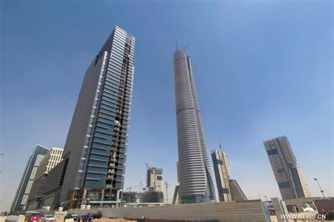

تُعد العاصمة الإدارية الجديدة إحدى أبرز المشروعات القومية التي أطلقتها الدولة المصرية في إطار رؤيتها الشاملة لبناء جمهورية جديدة تُلبّي احتياجات المستقبل، وتُواجه التحديات المتراكمة للزحف العمراني العشوائي، والتكدس السكاني، والضغط الهائل على البنية التحتية في القاهرة الكبرى. وقد تم الإعلان عن المشروع رسميًا في مؤتمر دعم وتنمية الاقتصاد المصري عام 2015، بوصفه نقلة نوعية في التخطيط العمراني والإدارة الحكومية، ومركزًا جديدًا يجسد مفاهيم التنمية المستدامة، والتحول الرقمي، والطاقة النظيفة، وتوزيع الكثافات السكانية. تبلغ المساحة الإجمالية للعاصمة الإدارية الجديدة حوالي 170 ألف فدان، بما يعادل مساحة دولة سنغافورة تقريبًا، وتقع شرق القاهرة على بُعد 45 كيلومترًا، بين طريقي السويس والعين السخنة. ومن المُخطط أن تستوعب المدينة عند اكتمال مراحلها أكثر من 6.5 مليون نسمة، مع بنية تحتية متطورة تسمح باستيعاب توسعات مستقبلية. وتُشرف على تنفيذ المشروع "شركة العاصمة الإدارية للتنمية العمرانية"، وهي شركة مملوكة بالكامل للدولة ممثلة في القوات المسلحة وهيئة المجتمعات العمرانية، وتُدار وفق نظام اقتصادي مستقل يهدف إلى تحقيق عائد مستدام يغطي التكاليف دون تحميل موازنة الدولة أعباء مباشرة. يشمل المشروع عدة أحياء ووحدات متكاملة، من بينها الحي الحكومي الذي يضم 34 وزارة ومقر رئاسة مجلس الوزراء، والذي انتقلت إليه فعليًا عدد من الوزارات منذ عام 2023. كما يتضمن المشروع "الحي الرئاسي" الذي يشمل قصر الرئاسة الجديد، و"البرلمان الجديد" المُقام على مساحة 126 ألف متر مربع. وتُعد "مدينة الثقافة والفنون" من أبرز معالم العاصمة، حيث تضم دار الأوبرا الجديدة، ومتاحف، ومسارح، ومراكز إبداعية، على أعلى مستوى فني وتكنولوجي. كذلك يُقام بها "مدينة المعرفة" التي تمثل أول مجتمع تكنولوجي متكامل في مصر، مخصص للذكاء الاصطناعي والبحوث الرقمية، بالشراكة مع كبرى الجامعات العالمية. ومن الناحية الاقتصادية، تضم العاصمة "المنطقة المالية" التي تم تصميمها لتكون مركزًا اقتصاديًا عالميًا يضم البورصة ومقار البنوك الكبرى، إلى جانب "البرج الأيقوني" الذي يُعد أعلى ناطحة سحاب في إفريقيا بارتفاع يصل إلى 385 مترًا، ويُجسّد الرؤية الطموحة لمصر في أن تصبح محورًا إقليميًا لجذب الاستثمار العالمي. وتتوفر في المدينة شبكة طرق داخلية تتجاوز 600 كيلومتر، بالإضافة إلى خطوط ربط متعددة، من بينها القطار الكهربائي الخفيف (LRT) الذي يربطها بمدينة السلام والعاشر من رمضان، ومونوريل العاصمة الذي يربطها بالقاهرة الجديدة ومدينة نصر. وقد تم بناء آلاف الوحدات السكنية في العاصمة الإدارية، منها ما يُخصص للإسكان المتوسط والفوق متوسط، ومنها ما يتبع نظام الفيلات والمجتمعات المغلقة. كما تم تخصيص مناطق للجامعات الدولية والمدارس والمستشفيات، وإنشاء محطات معالجة مياه ومحطات توليد طاقة تعتمد على مصادر صديقة للبيئة. وتتبنّى العاصمة الإدارية نظام المدن الذكية، حيث تُدار جميع المرافق والخدمات من خلال منظومة رقمية متكاملة تُمكّن السكان من أداء معاملاتهم إلكترونيًا، وترفع من كفاءة التشغيل والصيانة. من الناحية المالية، يُعد المشروع من أكبر المشروعات الممولة ذاتيًا في المنطقة، حيث تعتمد شركة العاصمة الإدارية على بيع الأراضي للمستثمرين العقاريين والقطاعات المختلفة، وحققت إيرادات فاقت 250 مليار جنيه حتى نهاية عام 2023، ما سمح بتمويل البنية التحتية دون تحميل الموازنة العامة أعباء إضافية. وتُشير التقديرات إلى أن الاستثمار في العاصمة الإدارية سيوفر ملايين فرص العمل المباشرة وغير المباشرة، وسيسهم في تنشيط عشرات القطاعات المرتبطة بالصناعة والبناء والخدمات. وقد نالت العاصمة الإدارية اهتمامًا دوليًا، حيث تم تصنيفها من قبل مؤسسات عالمية كمثال على التحول العمراني السريع في إفريقيا والشرق الأوسط. كما زارها وفود من دول آسيوية وأوروبية للاطلاع على التجربة المصرية في بناء مدينة ذكية من الصفر. ولا شك أن هذا المشروع يُعد ركيزة أساسية في خطة الدولة نحو الانتقال لمفهوم المدن المستدامة، وإعادة توزيع الثقل السكاني والجغرافي بما يتناسب مع التحديات المستقبلية. إن العاصمة الإدارية الجديدة ليست مجرد انتقال في الموقع الجغرافي للمؤسسات، بل هي انتقال في فلسفة إدارة الدولة، وتعبير عن إرادة سياسية واضحة لتحديث أدوات الحكم، وتيسير الخدمات للمواطنين، وخلق بيئة عمرانية تليق بمكانة مصر وتاريخها. وهي كذلك نافذة على المستقبل، تُجسد طموح دولة تسعى لبناء نموذج حضاري حديث على أسس علمية وإدارية واقتصادية متطورة، بما يعكس روح الجمهورية الجديدة التي تقوم على الشفافية، والكفاءة، والتنمية المتوازنة.
